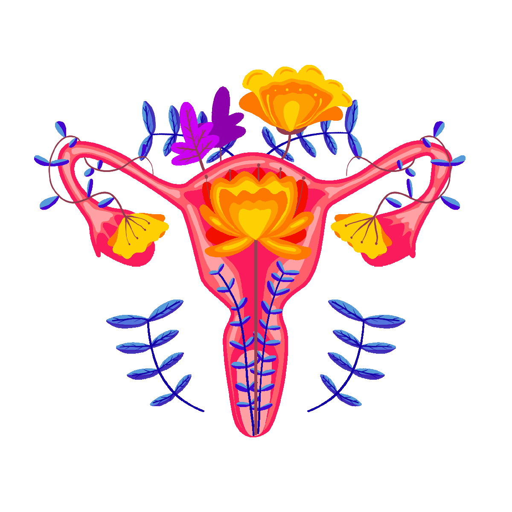

-
O ciclo menstrual varia de 21 e 38 dias, variam de mulher para mulher. Esse aplicativo é para você saber o dia que você irá menstruar de acordo com o seu cadastro específico e quais dias você estará no período fértil. Uma mulher adulta pode perder durante a menstruação cerca de 30ml a 80ml, o tempo médio da menstruação pode durar de 3 a 7 dias.

- O ciclo menstrual é o principal responsável por modificações da fisiologia feminina, que
pode afetar algumas respostas morfofuncionais. Objetivo: Verificar a influência das diferentes fases do ciclo
menstrual na flexibilidade de mulheres jovens. Método: 44 voluntárias divididas em um grupo controle (n =
24), que fazia uso regular de contraceptivos hormonais, e um grupo experimental (n = 20), que não utilizava
anticoncepcionais, foram submetidas a três dias de avaliações, uma em cada fase do ciclo menstrual (folicular, ovulatória e lútea). Foram avaliados dados antropométricos (massa corporal, índice de massa corporal,
circunferência de cintura e abdômen) e de composição corporal (percentual de gordura e massa magra).
A flexibilidade foi mensurada através do teste de sentar e alcançar no banco de Wells. Aplicou-se, então,
o teste não paramétrico de Mann-Whitney para as comparações intergrupos e o teste de Friedman para a
comparação entre as diferentes fases menstruais. Resultados: Não foram encontradas diferenças significativas
intra e intergrupos entre as diferentes fases do ciclo (p > 0,05).
- Foi observada maior variabilidade no grupo
controle em comparação ao experimental. Conclusão: As diferentes fases do ciclo menstrual não interferem
na flexibilidade de mulheres jovens, independente do uso de anticoncepcionais hormonais.
Foram recrutadas, por conveniência, 82 mulheres, aparentemente saudáveis, com idades entre 18 e 40 anos. Como critério de
inclusão, selecionou-se aquelas que tinham pleno conhecimento
sobre seu ciclo menstrual, o qual deveria ser regular entre 25 e 40
dias. Após a escolha inicial, foram excluídas aquelas que reportaram
histórico de qualquer distúrbio relacionado ao sistema endócrino
e/ou as que não possuíam o ciclo menstrual regular. Para isso, inicialmente, foi aplicada uma anamnese para a primeira triagem das
voluntárias na qual foram registrados os dados pessoais referentes ao
nome, idade, endereço, telefone, além de informações sobre o ciclo
menstrual e a prática de atividade física habitual. Foram classificadas
como fisicamente ativas aquelas que reportaram praticar atividade
física sistematizada há pelo menos três meses consecutivos, com
frequência mínima de três dias semanais e tempo igual ou superior
a 30 minutos por sessão.
- Após os procedimentos iniciais e desistências por diversos motivos durante o período de coleta de dados, a amostra foi composta
por 44 mulheres que assinaram um Termo de Consentimento Livre e
Esclarecido que atende à resolução no 196/96 do Conselho Nacional
de Saúde. O presente estudo foi submetido e aprovado pelo Comitê
de Ética em Pesquisa Envolvendo Seres Humanos da Santa Casa de
Misericórdia de Juiz de Fora, MG, sob o parecer no 011/10.
Para caracterizar a amostra foram utilizadas as medidas da primeira
visita, independente da fase do ciclo menstrual. Conforme a Tabela 1,
não foi observada diferença significativa das características individuais
da amostra entre os grupos (p > 0,05).
Os dados antropométricos (massa corporal, IMC, circunferência de
cintura e abdômen) e de composição corporal (percentual de gordura
e massa magra) não apresentaram diferenças entre as fases do ciclo
menstrual (p > 0,05).
- Quando comparadas estas variáveis, a cada fase
do ciclo, entre os grupos controle e experimental não foi encontrada
diferença significativa. Após os procedimentos iniciais, as voluntárias foram familiarizadas
com o ambiente no qual ocorreu a coleta dos dados, bem como os
profissionais envolvidos no experimento. Para isso, a amostra foi dividida em dois grupos: um grupo experimental (GE), que constituiu de
mulheres que não utilizavam contraceptivos hormonais (n = 20, sendo
13 fisicamente ativas); e um grupo controle (GC), que foi composto
pelas que faziam uso, há pelo menos dois ciclos, de anticoncepcionais
hormonais (n = 24, sendo 11 fisicamente ativas). Todas realizaram três
visitas ao laboratório de forma randomizada (indivíduo x fase do ciclo:
folicular, ovulatória e lútea).
Para definição da fase em relação ao dia do ciclo e posterior análise dos dados, foi utilizado o critério proposto por Wojtys et al.3
para mulheres eumenorreicas em que a fase folicular inicia no primeiro dia
do ciclo, ou seja, no início da menstruação, e perdura até o nono dia, a
fase ovulatória ocorre entre os dias 10 e 14 e a fase lútea inicia a partir
do 15o e dura até o final do ciclo.